4 DAGs
4.1 Objectives
- Getting to know DAGs
- Understand its implications on achieving unbiased estimates for effects of interest
- Building a DAG for the NBA data to model the effect of scored points on salary
4.2 Functions Covered
dagitty(): Define Directed Acyclic Graphs.plot(): A generic base R function that can be used to plot a DAG.adjustmentSets(): Derive the adjustment set from a DAG.
4.3 Modelling
This session kicks off the block on linear regression as a statistic modelling technique, but before we jump into the deep end and learn what linear regression is and how we can apply it, we first have to understand what modelling is and why we might do it. We also need a way to find out what we actually have to include in the model and what we might not want or even can not include to achieve robust results. This is what this session is all about.
4.3.1 What is modelling?
Before we approach this question, we should briefly think about what steps a typical data analysis project comprises. We usually start with an interesting problem and derive a research question from it. Based on this question we would go into the literature and read up on theories and already published research papers that are relevant to our question. We construct a theoretical framework for our particular problem and formulate some hypotheses, collect or identify appropriate data and conduct an exploratory data analysis. At this point we should already have a firm understanding about what we actually want to find out and how our data is structured. The next step would be modelling.
So what is modelling? In general we have one dependent variable, typically denoted as \(y\). This variable has some varying values. Our goal in modelling is to estimate how these values are generated. Generating here refers to the data generating process that we assume responsible for \(y\) having the values it has. One or multiple independent variables, \(x_1 \ x_2 \ ... \ x_k\), influence how the values of \(y\) are generated; thus \(y\) depends on the values of our independent variable(s).
When we model, we do not know the data generating process, but based on theoretical considerations, careful thinking and exploratory data analysis, we can make assumptions on how we think the process operates. DAGs are a tool that can assist us in this step. We can use it to formally clarify our assumptions on the data generating process and to formulate a model based on its implications.
4.3.2 Estimating effects vs. prediction
There are two main reasons for modelling in the social sciences.
Our goal can be prediction, as in predicting our dependent variable \(y\) with the highest possible accuracy. This maybe is the less classical approach to modelling, but one that has come to the forefront in recent years, especially in the context of machine learning.
Take ChatGPT for instance. The underlying GPT model, a large language model (LLM), is used to predict what the next word in a sequence of words should be. Based on the context of the question and the prior words in the answer, which we can understand as independent variables for our example, it calculates what word has the highest probability of being the correct next one. It is all about prediction.
An example closer to home are annotations for text data. Imagine you have a lot of text, hundred thousands of social media posts, and you want to explore the sentiment expressed in those. Do they lean to the positive or to the negative? You can now go and take a “small” sample, let us say a few thousands and annotate them by hand. A lot of work, but based on those manually annotated posts we can train a machine learning model that learns from those posts and then, if everything goes well, is able to automatically annotate the remaining hundred thousands of posts for us. Again, this is all about prediction; here predicting the sentiment of a post, the dependent variable, based on the words it contains, the independent variables.
When prediction is our goal, we most often are not primarily interested in understanding what independent variables influence the dependent variables in which direction and with which magnitude. We are interested in the most accurate prediction for the dependent variable possible. These approaches are therefore also called y-centered.
When our interest is focused on one or multiple independent variables, our approach is x-centered. This is the more classical usage of modelling in statistics, at least for the social sciences. Here our goal is to estimate an effect of interest as accurately as possible. \(y\) is still our dependent variable but our focus lies on understanding which \(x\) variables influence \(y\), in which direction this influence goes and what the magnitude of the effect is.
Let us say we are interested in why people cast their vote for a certain party. We may have some hypotheses that proposes that voters who find certain issues important have a higher probability of casting their ballot for this party. Our interest would not be predicting the vote accurately but explaining why someone votes the way they do. We can build a model from our assumptions, maybe there are other important factors that correlate with the issues and the vote, and test our hypotheses based on the results. Does holding certain issues important really increase the chances of voting for this party or is there no effect?
Over the last sessions we build an interest in the relationship between points scored and the salary received for NBA players. We could approach this as a prediction problem, i.e. trying to predict the salary as accurately as possible based on a model that incorporates the scored points as well as other factors that we assume of having an effect on the salary. We will return to this in session 11. We could also approach this as estimation problem, i.e. trying to estimate the effect of scored points on the salary. We will most probably have to include other variables that affect the relationship of score on salary as well, but the model used will not necessarily be the same. This approach is what we will tackle in this and the next 5 sessions.
Having settled on estimating the effect of score on salary, how can we find out which variables we have to include in the model? The first step, and we can never replace this with ever so fancy a statistical technique, is thinking about the problem. We should also have a theoretical understanding of our problem, know the current research on the topic and do some exploratory data analysis. Based on this we will already have developed some assumptions concerning our proposed underlying data generating process. Should we now throw everything into our model that we deem interesting or relevant for the relationship between score and salary? No, we should not. What we should do is use a tool that helps us formalise our assumptions and figure out which variables are actually relevant for measuring our effect of interest; and which variables we can not include in our model as they would potentially lead to incorrect estimations. This is where DAGs come in.
4.4 DAGs
4.4.1 Directed acyclical graphs
DAG is short for directed acyclical graph. DAGs are graphs that display the assumed relationship between variables as arrows, or missing arrows, between them. An arrow represents our assumption that one variable has an effect on the other, a missing arrow represents our assumption that one variable has no effect on the other. These arrows are directed. This represents our assumptions about the direction of the effect. We do not only assume that two variables are somehow associated, but we explicitly state which one influences the other.
A simple DAG could look like this:
What are the assumptions about the data generating process we have encoded here? We have one dependent variable \(X\) that we assume to have a direct effect on the independent variable \(Y\). We know that our assumption was that \(X\) has an effect on \(Y\) and not the other way around, because the arrow is directed from \(X\) to \(Y\).
We call the sequence of one or many arrows that do not pass a single variable more than once a path. When trying to estimate an effect of interest we are foremost interested in the paths going from our independent variable of interest to the dependent variable. In the first example we only have the one path \(X \rightarrow Y\), but in most “real” DAGs we will have multiple paths between \(X\) and \(Y\).
Consider this DAG, where we introduce a second variable \(A\):
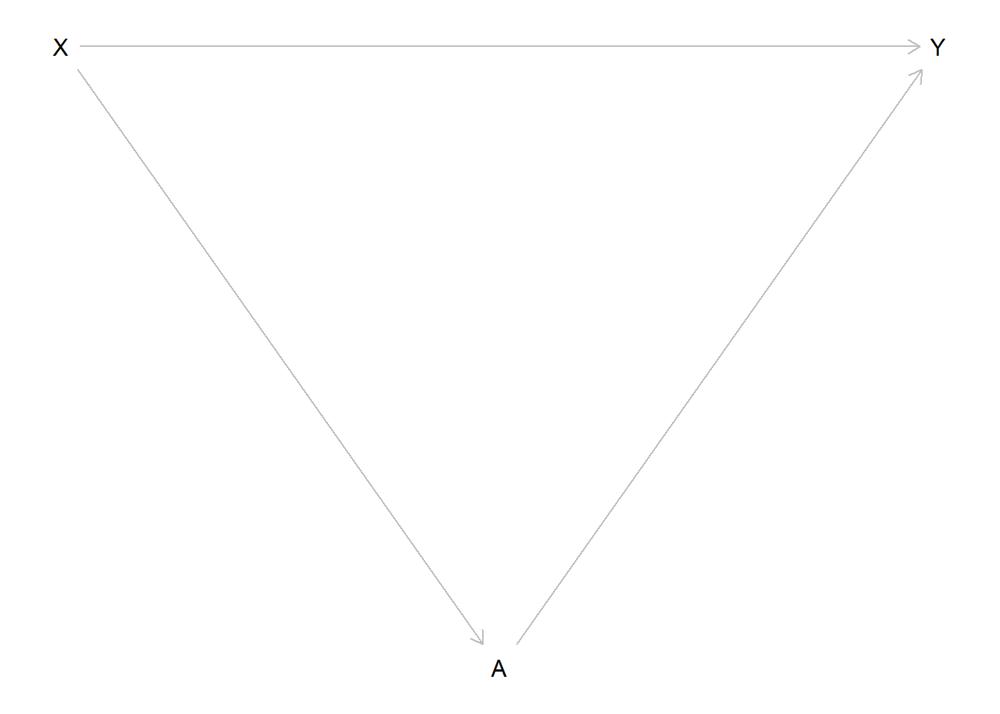
Here there are two paths from \(X\) to \(Y\), \(X \rightarrow Y\) and \(X \rightarrow A \rightarrow Y\). Our assumption here was that \(X\) directly influences \(Y\), but that \(X\) also directly influences \(A\) which in turn directly influences \(Y\). The latter is an indirect effect from \(X\) on \(Y\) through \(A\).
DAGs are also acyclical, meaning that there can not be any cyclical relationships between variables. A cyclical relationship would be present if we start from one variable and follow a path that leads us back to this variable.
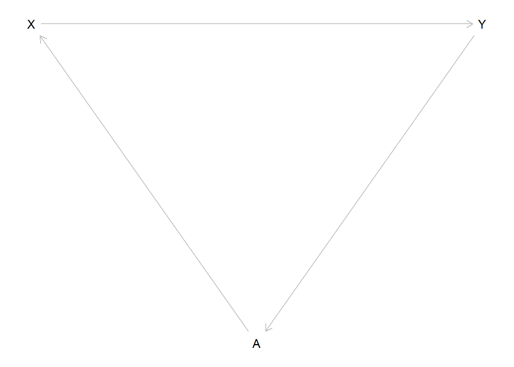
In this example there is a path \(X \rightarrow Y \rightarrow A \rightarrow X\) that leads us from \(X\) back to \(X\). This is not allowed in a DAG.
Now that we know the basics, what do we actually do with a DAG? A DAG is a way to graphically formalise our assumptions about the data generating process. But it is about more than drawing nice formalisations, it is also about figuring out which variables we have to include and which we are not allowed to include to get an unbiased estimate of our effect of interest. We do this by blocking all paths from \(X\) to \(Y\) that do not represent the relationship we want to estimate and at the same time opening up all paths that do. For this to make sense, we need to know the three patterns of relationships between a set of three variables and how we can open or close paths with them.
4.4.2 Patterns of relationships
4.4.2.1 Chains/Pipe
Three variables can be connected in a chain or pipe like this:
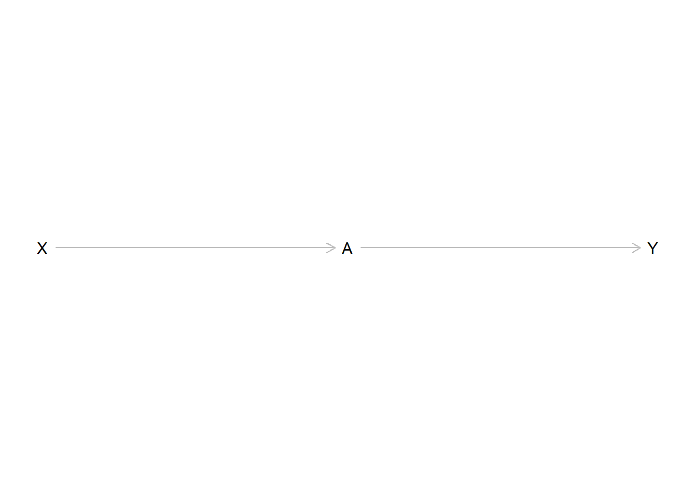
\(X\) has an effect on \(A\) which in turn affects the value of \(Y\). This implies that \(X\) and \(Y\) are statistically correlated. When the value of \(X\) changes, the value of \(Y\) also changes, “transmitted” by the indirect effect \(X\) has on \(Y\) through \(A\). Remember we are still interested in measuring the effect of \(X\) on \(Y\), so we also want to measure this indirect effect.
The DAG tells us that there is a relationship between all three variables. We therefore could be tempted to include \(A\) in our model as well. But what would happen is that by including \(A\) we would block the path between \(X\) and \(Y\). We would not be able to measure the association we are actually interested in. Including such a variable and thereby blocking a path of interest is called overcontrol bias.
In some cases overcontrolling can make the effect of interest unmeasurable. We would then conclude from our analysis that \(X\) has no effect on \(Y\) and that our hypotheses was wrong, while there actually could be an effect that we made “disappear” by blocking its path. Drawing a DAG based on our assumptions helps us to prevent this pitfall.
4.4.2.1.1 Mediation
A special case of pipes is mediation.
Consider this DAG:
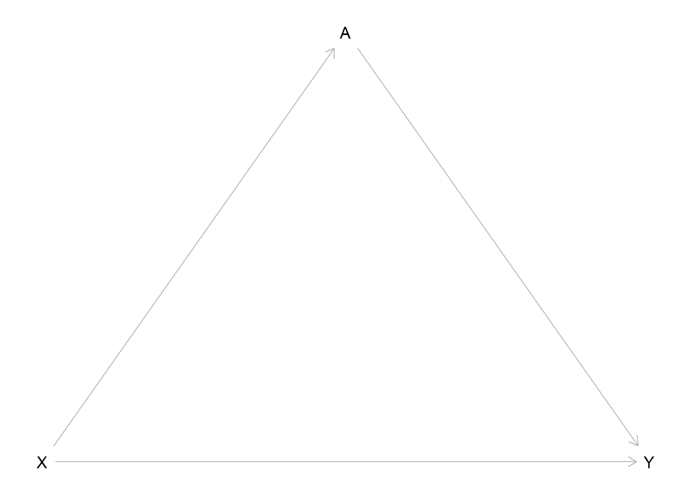
We see a direct effect through the path \(X \rightarrow Y\) as well as indirect effect through \(X \rightarrow A \rightarrow Y\). Should we include \(A\) in our model? This depends on what we want to measure.
If we are interested in the total effect of \(X\) on \(Y\), we should not. Both effects, the direct and the indirect paths, are of interest here, so we keep both paths open by not controlling for \(A\).
Our interest could also lie exclusively in the direct effect. Here we would want to measure the effect of \(X\) stripped by all indirect effects. In this case we want the path \(X \rightarrow Y\) to keep open, but we would close the path \(X \rightarrow A \rightarrow Y\) by controlling for \(A\).
We could also only be interested in the indirect effect, the effect of \(X\) on \(Y\) that goes through \(A\). We can not directly model this, but we can compute the indirect effect as the difference between total and direct effect.
4.4.2.2 Confounders
The second pattern we may see is the fork or confounder.
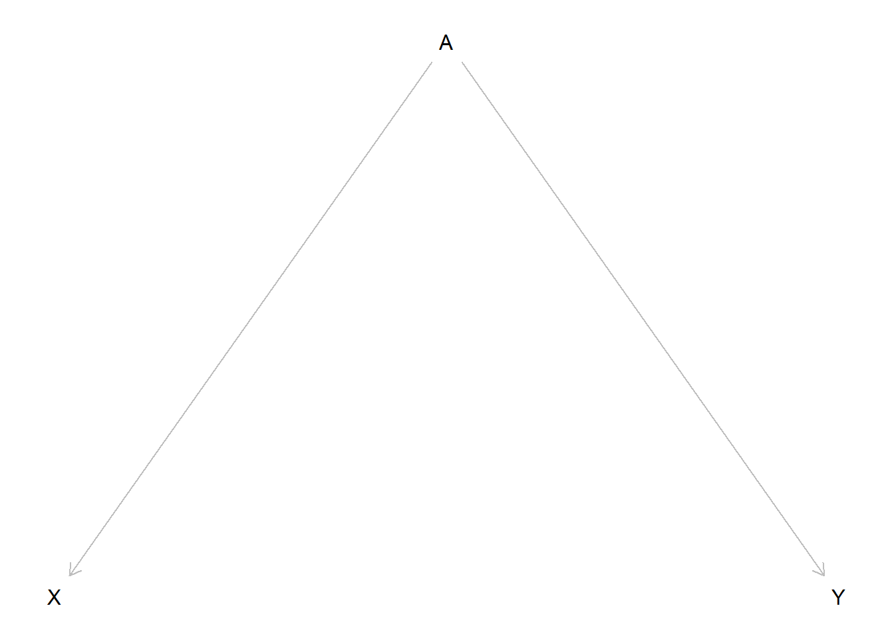
We see that there is no implied direct relationship between \(X\) and \(Y\) but that both variables are influenced by \(A\). If we would measure the relationship between \(X\) and \(Y\) we should see no statistical correlation. The problem is, that we would see a correlation despite this. Why is that? The values of \(X\) and \(Y\) both depend on the value of \(A\). If we for example assume that both effects are positive the value of \(X\) would rise with the value of \(A\) and the value of \(Y\) would rise with the value of \(A\) also. The opposite would be true if both effects were negative. Lower values for \(A\) would lead to lower values for \(X\) and \(Y\). But even if the effects would be opposite, they would never cancel each other out perfectly. \(X\) and \(Y\) vary together. If we just include \(X\) and \(Y\) in our model this would show up as an effect from \(X\) on \(Y\).
In DAG terms, there is an open path between \(X\) and \(Y\) although we did not draw a direct path: \(X \leftarrow A \rightarrow Y\). This may seem counterintuitive at first, as the arrows go in opposite directions, but for paths in a DAG to exist, the direction of the arrows does not matter. Every connection between variables is a path. So there is an open path, in this case a so called backdoor path, that leads to a statistical association between \(X\) and \(Y\), but we can close it by controlling for \(A\). If we do this, we would see no remaining association between \(X\) and \(Y\) and thus get an unbiased estimate for the effect of interest, i.e. no effect.
If this still seems unintuitive consider the following example, which you can also find in many statistical textbooks. Do storks bring babies? We could tackle this analytically by taking a measure of babies born in a region as our dependent variable and the number of storksightings in the same region as our dependent variable. Let statistics come to the rescue and help us discard the notion of the baby bringing stork once and for all. But alas, our model will tell us that there is a positive effect from storksightings on the number of newborns. Should we conclude that everything we learned from our parents and teachers was one big lie to hide away the magical truth about reproduction? Before we do that, let us return to rationality. Maybe we have missed something important. It turns out that there is a confounder we did not include in our model. More rural areas have higher birthrates and also have a higher rate of storksightings while both variables have lower values in more urban regions. Our dependent and independent variables both vary by the value of the confounder and thus it seems that there is a correlation where there actually is none. If we now include a measure for the type of region, let us say population density, this spurious association disappears and we can return to normality. Storks do not bring babies after all.
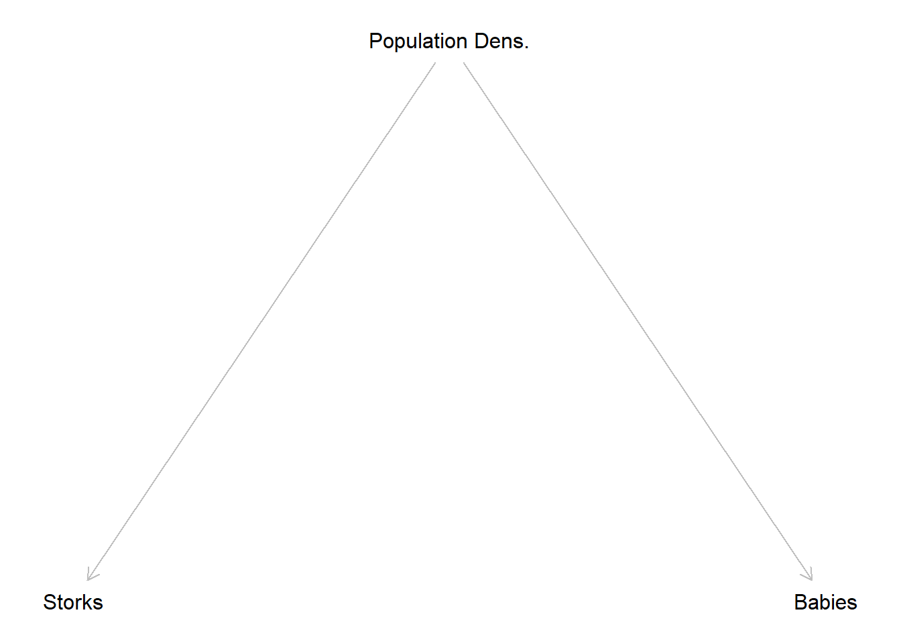
4.4.2.3 Colliders
The last pattern we have to consider are colliders. A collider is a variable on a path that has two arrows pointing into it:
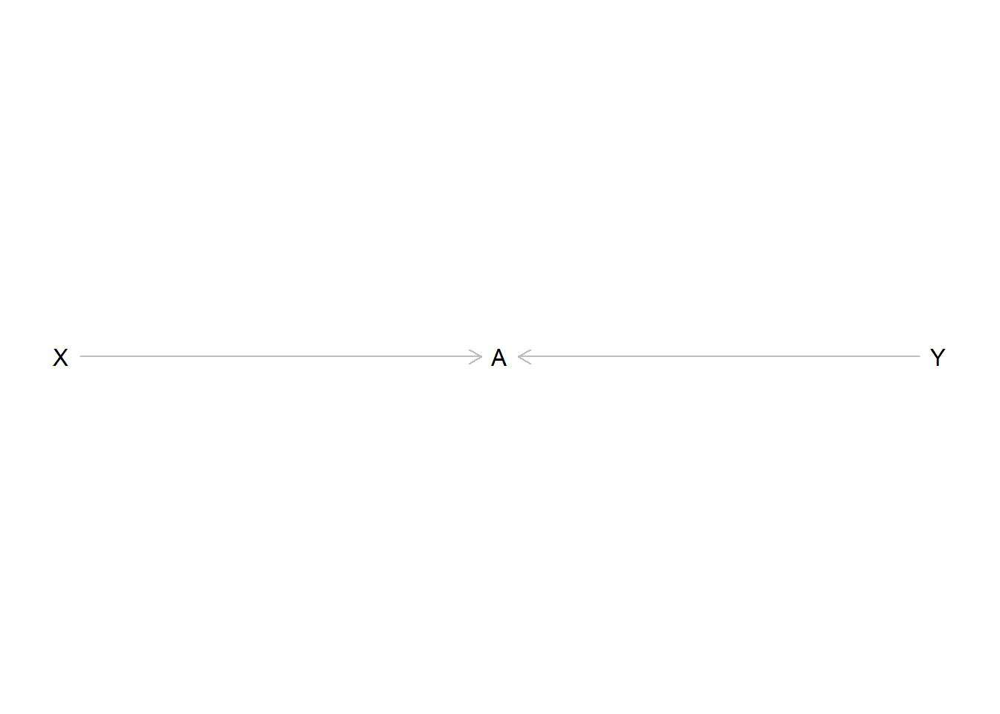
Here \(A\) is influenced by the value of \(X\) as well as \(Y\). Again, there should be no effect of \(X\) on \(Y\) and in this case there is none if we just include \(X\) and \(Y\) in our model. If we also include \(A\) we introduce an association between \(X\) and \(Y\) even if there should be none. This implies that we should not control for colliders because we would open up a path that creates a spurious association between two variables that are not related.
4.4.3 Adjustment set
Now we have all the building blocks for identifying which variables we have to include in our model and which we are not allowed to include. If we do not follow these rules we may statistically find relationships where there are none or miss relationships that actually exist. We then would draw the wrong conclusions for our hypotheses and research question. We would produce bad science.
If we draw out our DAG and use its implications to identify the correct adjustment set \(Z\) of control variables, we do not fall into this trap. We only control what we have to, and nothing that we should not. We thus create the best model to get an unbiased estimate for our effect of interest; but there is always a caveat and this is a big one. The model is only correct if our DAG is also correct and we can never know for certain if it is. We could make wrong assumptions, forget important relationships, and make all matters of mistakes while building our DAG. While DAGs are a great tool for identifying the adjustment set, the technique alone can never replace careful thinking.
4.5 NBA DAG
We will now pick up where we left off in session 2 and return to the NBA data. Equipped with our new tool we can now draw a DAG with the goal of building a model to estimate the effect of points scored on the salary a player receives. The assumption is, that the higher the point average, the higher the salary. This makes intuitive sense as a high scoring player is more valuable to the team and thus may receive a higher monetary compensation.
Let us start building a DAG with the information we already have.
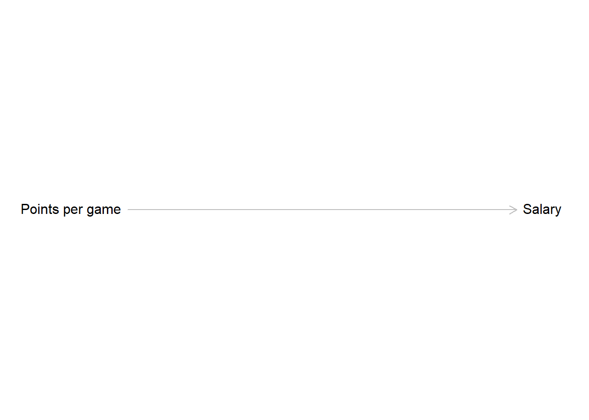
Now we have to think about other factors that could influence the relationship between points and salary. One variable we already identified as having an effect on both was the position a player occupies. The position influences how many points per game a player can score and we also already saw that centers make more money compared to point guards. Right now we have no reason to believe that other positions do not also have an effect on the received salary. Following this reasoning, position is a confounder for points and salary.
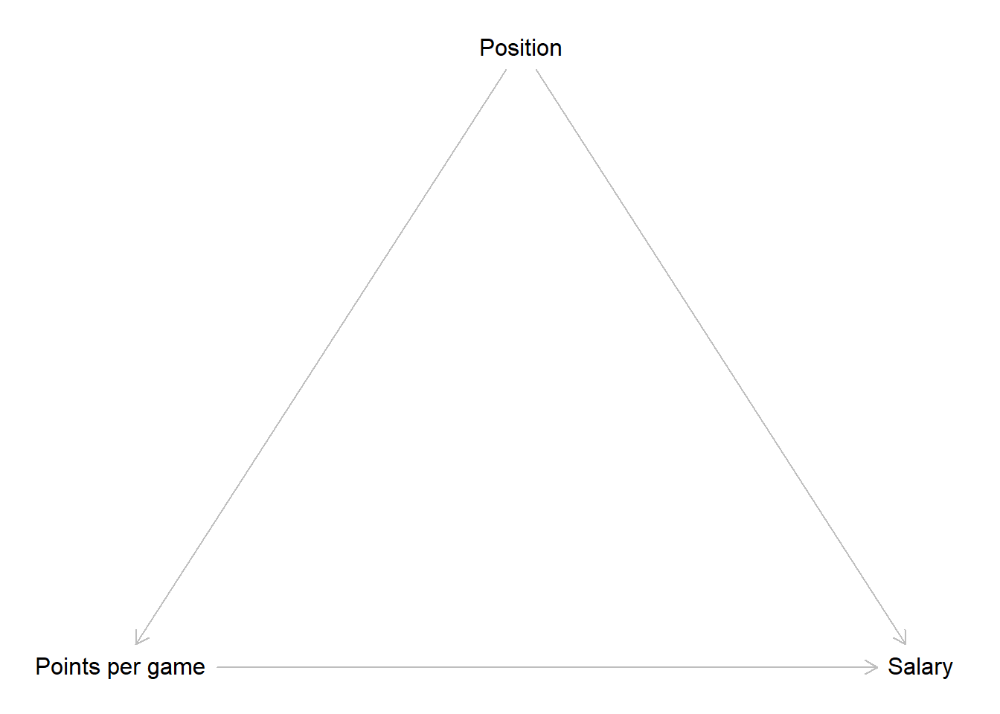
It is also reasonable that body height influences which position a player can occupy. Centers have to be big while smaller players tend to play on other positions. At the same time, height is an advantage if you want to score in a basketball game. Thus height is a confounder for points and position.
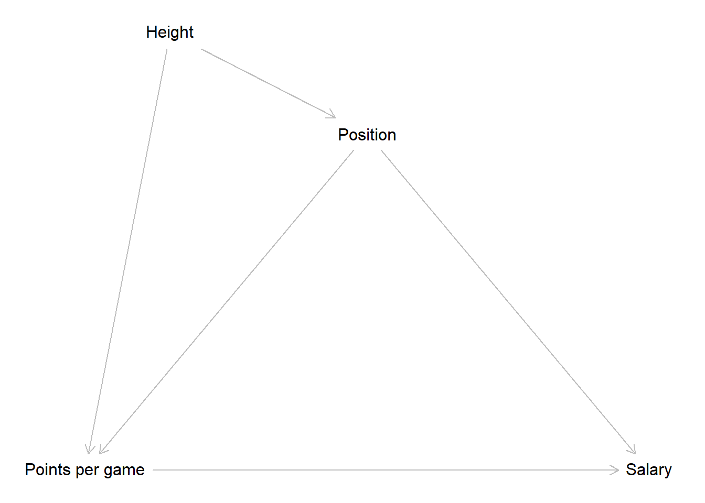
Another factor that will have an effect on the salary is the team a player plays for. More successful teams will be able to pay higher salaries. The season an observation was recorded in should also influence the paid salary as we can expect a general inflation of salaries over time.
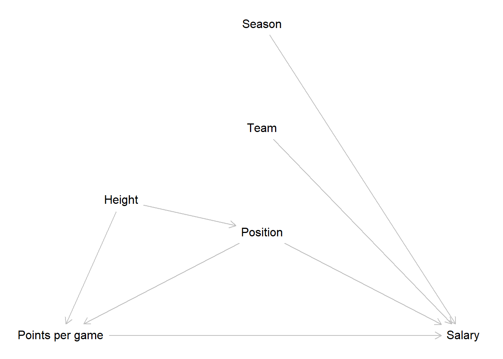
This is our final DAG. Does it correctly depict the underlying data generating process? We do not know for sure, but the DAG correctly reflects our assumptions at this point. Those may be wrong. Maybe the data generating process actually works slightly or even completely different; but to the best of our current knowledge, this is how the scored points affect the salary a player receives.
We can now inspect what implications the DAG has for our model. To do this, let us list the paths from our independent to the dependent variable.
\[A: Points \rightarrow Salary\] \[B: Points \leftarrow Position \rightarrow Salary\]
\[C: Points \leftarrow Height \rightarrow Position \rightarrow Salary\] Path A is a direct path from our independent variable to our dependent variable. We will have to include scored points and salary into our model, but that is a given.
Paths B & C are both backdoor paths - these are easily spotable by an arrow pointing into the independent variable - that we have to address somehow. Let us consider B first. Position is a confounder for points and salary. Above we already learned how to deal with this, we control for it. This removes the spurious part of the association between points and salary introduced by the confounder. Path C also includes a confounder, namely the body height of a player. Do we also control for this variable to close path C? No, we do not. If we further examine path C we will see that it also includes position as a pipe. When we control for a variable in a pipe, the path gets closed. As we have to include position to close path B, path C is also already closed.
The two remaining variables, team and season, have direct effects on the salary but do not lie on a path from points to salary. This implies, that we do not have to control for them if our goal is estimating the effect of points on salary.
Above we briefly talked about the two possible goals of modelling. Here and over the next sessions our goal is estimating an effect of interest without bias. We used the DAG to identify an adjustment set of variables we have to control for to reach this goal. If our goal was predicting the salary as accurately as possible we would made other conclusions. The team a player is employed by and the season where an observation was measured are both relevant predictors for the received salary. For prediction we would have included both variables because this should increase the accuracy of the prediction. We will return to this in more detail in session 11.
4.6 Resources
4.6.1 dagitty.net
While the underlying rules of DAGs are relatively straightforward, identifying the adjustment set can get harder the more complex a DAG gets. Consider this for instance:
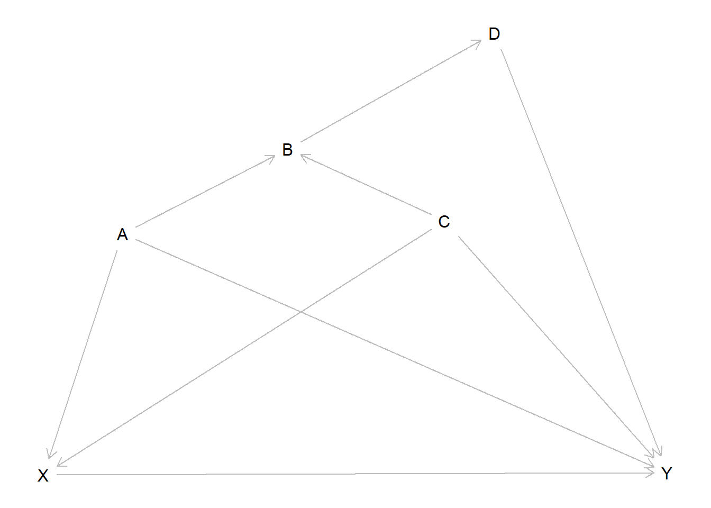
What variables do we have to include in our adjustment set to get unbiased measure for the effect from \(X\) on \(Y\)? We would suggest you take out pen and paper and try to figure it out. You can approach this as above. List all paths from \(X\) to \(Y\) that do not include a variable twice and try to find the adjustment set that closes all paths besides the one(s) needed to measure the effect from \(X\) on \(Y\). Spoiler: In this case the only path we want to keep open is the direct effect \(X \rightarrow Y\).
While this is doable, you may be unsure if you found the correct set. Luckily there is a convenient way to find out. https://dagitty.net/ provides a browser tool where you can draw DAGs - as well as export them for your papers - and check for the correct adjustment set. After launching the tool you should click on “Model” and then “New model”. Now you can start drawing. New variables are added by clicking on the canvas and naming them, arrows are added by first clicking on the variable where the arrow should start and then on the variable where it should end. For everything to work you should also declare the independent variable of interest the “Exposure” and the dependent variable the “Outcome”. Both can be set on the left under “Variable”. When the DAG is drawn correctly, the top right panel “Causal effect identification” should show which variables need to be part of the adjustment set to estimate the effect of interest.
Note that “Causal effect identification” is set to display the adjustment set for the total effect. This also is what we are interested in here. If we are interested in mediation, we can also set the panel to display the set for the direct effect.
4.6.2 How to use dagitty()
We can also draw DAGs directly in R, using the dagitty package. To
start drawing a DAG we write dagitty('dag {}). The actual definition
of the DAG takes place between the squirly brackets. First we list all
variables in the model by writing their names between quotation marks.
For each variable we can optionally add additional options between
square brackets following the name. In the example below we define one
variable as exposure and one as outcome, just like we would do on
dagitty.net. We also give values for the relative positions. If we skip
those, dagitty() will decide on the positions itself which may or may
not look nice and tidy. After all variables are defined we write out the
paths that should be present connecting the variable names with <- or
->, depending on the direction an arrow should point. We can than use
plot() to see the DAG.
# Load the dagitty package
library(dagitty)
# Define a DAG
dag <- dagitty('dag {
"Exposure" [exposure, pos="-1,0"]
"Outcome" [outcome, pos="1,0"]
"Confounding Variable" [pos="0,-1"]
"Mediator" [pos="0,1"]
"Exposure" -> "Outcome"
"Exposure" -> "Mediator" -> "Outcome"
"Exposure" <- "Confounding Variable" -> "Outcome"
}' )
# Plot the DAG
plot(dag)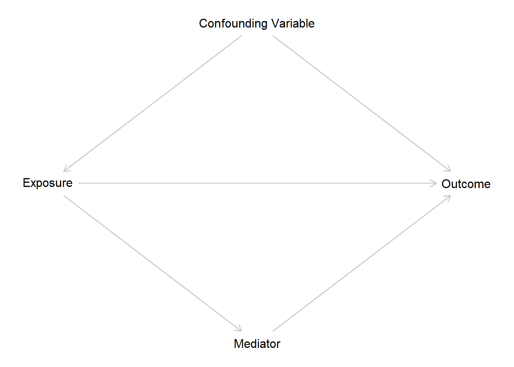
We can also use the function adjustmentSets() to derive our adjustment
set. The argument effect = lets us control if we want to see the
adjustment set for the "total" or "direct" effect.
# Identify the minimal adjustment set for estimating the total effect of Exposure on Outcome
adjustmentSets(dag, effect = "total")## { Confounding Variable }# Identify the minimal adjustment set for estimating the direct effect of Exposure on Outcome
adjustmentSets(dag, effect = "direct")## { Confounding Variable, Mediator }4.6.3 More on DAGs
If you are interested in diving deeper into DAGs, we can recommend this resources, which were also used for writing this session.
Richard McElreath provides a great introduction into the topic with many clear examples. While the book chapter on DAGs may require some knowledge of advanced statistical topics, the corresponding lecture on YouTube is more approachable:
McElreath, Richard (2020). Statistical Rethinking: A Bayesian Course with Examples in R and STAN. Second Edition. Boca Raton & Oxon: CRC Press. Chapter 5: The Many Variables & The Spurious Waffles, 123-160.
Corresponding YouTube lecture: https://www.youtube.com/watch?v=mBEA7PKDmiY
Felix Elwert wrote a concise paper on DAGs with a perspective that is more focused on causality than we have presented here:
Elwert, Felix (2013). Graphical Causal Models. In S. L. Morgan (Hrsg.), Handbook of Causal Analysis for Social Research, 245–273. Dordrecht [u.a.]: Springer.
If you really want to get into it, the work of Judea Pearl was central for establishing DAGs. An approachable starting point would be the “Book of Why”:
Pearl, Judea & Dana Mackenzie (2018). The book of why : the new science of cause and effect. New York: Basic Books.